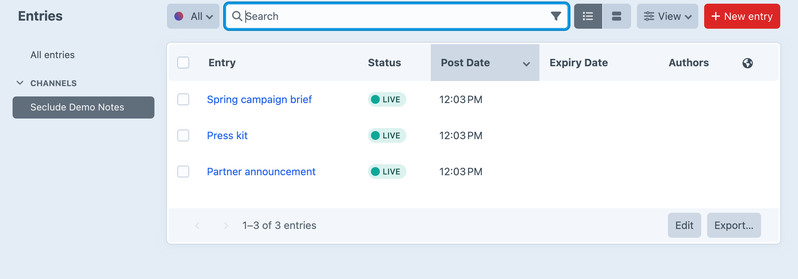
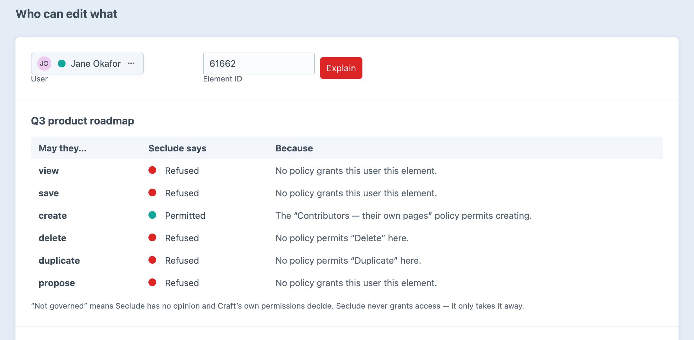

Permissions down to the single entry.
Restrict an editor to individual entries, categories, assets and users — not whole sections. By hand, or by rules that follow authorship, relations and structure.
Craft's permissions stop at the container. Seclude carries them the rest of the way, to the element — the job Isolate did on Craft 3 and 4, rebuilt for Craft 5.
Seclude narrows what Craft already allows. It never grants anything.
Grants add together. Anything in scope that no grant reaches is refused.
Six abilities per policy, all off until you name them.
What a refused editor can't open, they don't see listed either.

Pick a user and an element. Every ability, every policy, and why.
